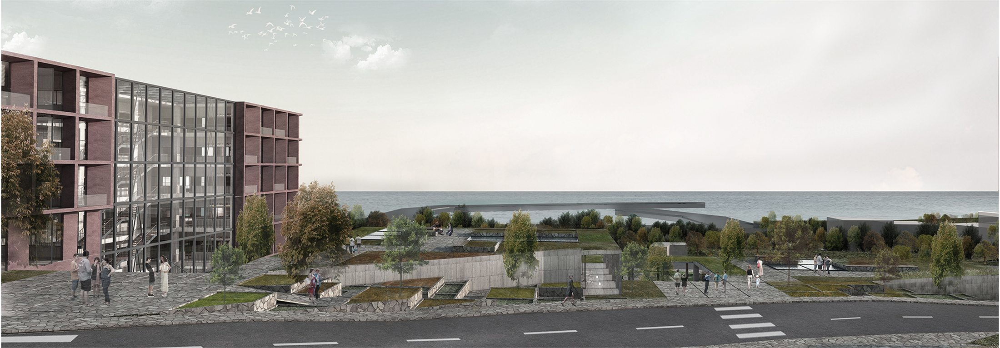
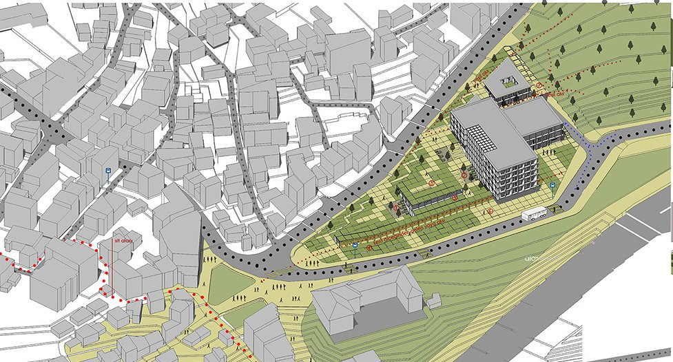
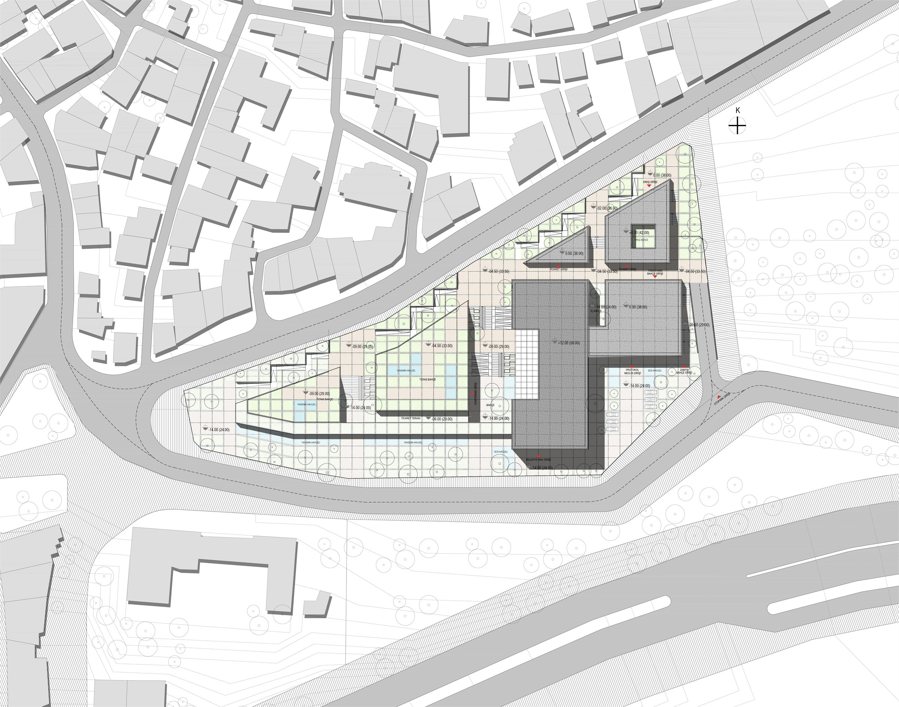
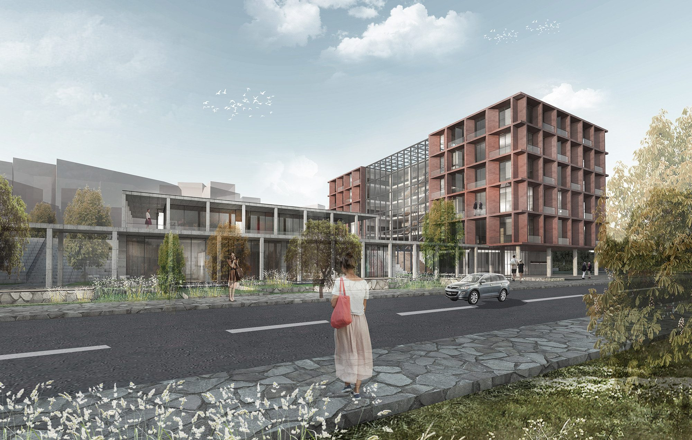
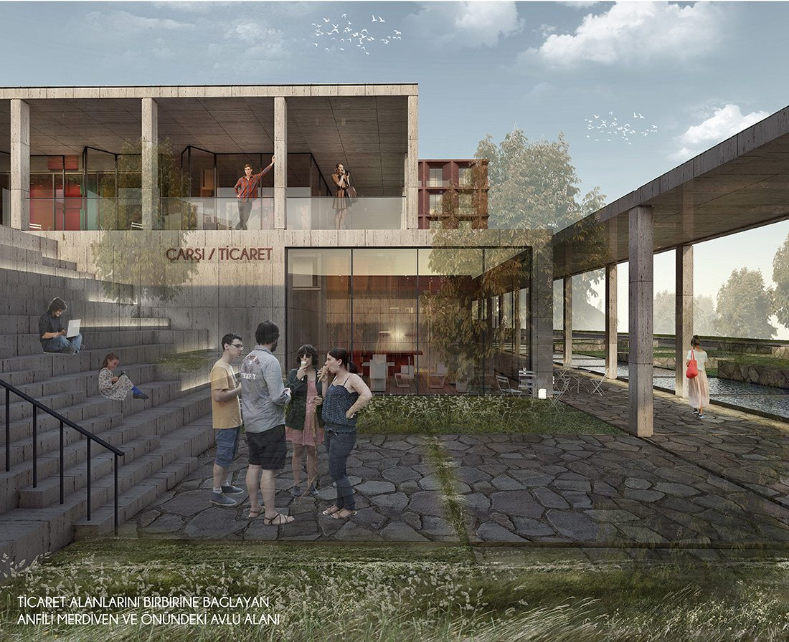
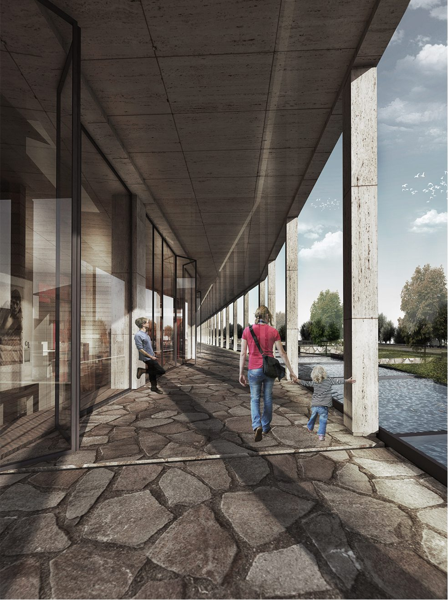
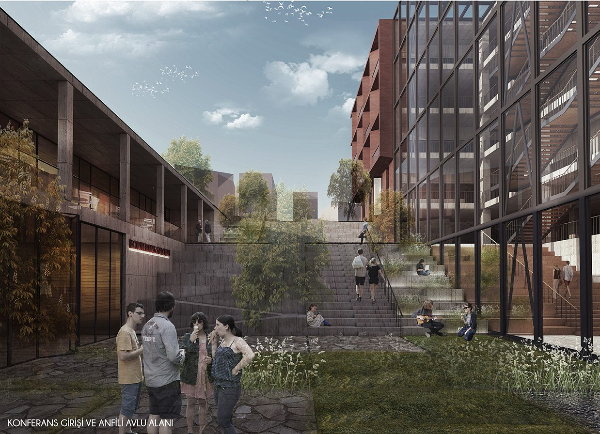
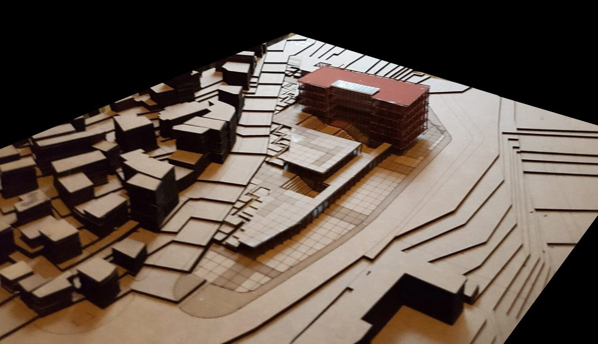

06 Süleymanpaşa, Tekirdağ, 2017
Tekirdağ Süleymanpaşa Belediye Hizmet Binası
- İşlev
- Ofis, Kamu Yapısı
- Konum ve Tarih
- Süleymanpaşa, Tekirdağ, 2017
- Arsa Alanı
- 11.500 m²
- İnşaat Alanı
- 30.000 m²
- Durum
- Yarışma, Katılımcı
- Ekip
- İrem Demiröz Koç, Burak Koç

Genel Yaklaşım
Tasarım alanı kentsel ölçekte incelenmiş; kent, sit alanı ve yeşil aks arasında bir nirengi noktası olduğu gözlemlenmiştir. Bu çıkarım göz önünde bulundurularak, alanın bu üç doku için 'geçirgen bir sınır' olarak tasarlanmasına karar verilmiştir.
Öncelikle program 'belediye hizmet birimleri' ve 'sosyal birimler' olarak iki başlık altında düşünülmüş; hizmet birimlerinin kent için anıtsal bir kütle oluşturmasına, sosyal birimlerin ise tüm alana yayılan, kamusal kullanıma izin veren ve hizmet birimlerinden tamamen bağımsız olarak da çalışabilen alanlar olarak tasarlanmasına karar verilmiştir.
Bu noktada, hizmet birimleri için tek bir kütlede toplanan anıtsal bir yapı; sosyal birimler için alandaki eğimi takip ederek araziye yayılan, açık, yarı açık ve kapalı kamusal kullanımlara izin veren, interaktif çalışabilen alanlar düşünülmüştür.
Alanın batısındaki tarihi dokudaki yaya aksı, arazide sosyal alanlarla birlikte çalışan bir sokak olarak devam ederken; batısındaki yeşil alan tasarım arazisine yine ticari alanlarla birlikte çalışan bir sokakla bağlanmış ve alanın eğimi ile birlikte batıya doğru kamusal yeşil alanlara dönüştürülmüştür.
Yeşil alanlardan yer yer kuzey–güney yönünde bağlantı sağlanmış ve sosyal alanların arazide kütle olarak değil, araziyle birlikte çalışan canlı ve kamusal alanlar olarak var olması sağlanmıştır. Kuzey–güney yönündeki bağlantıların sirkülasyonun yanında sosyal bir alan gibi de çalışması sağlanmıştır.
Gerek 'avlu' olarak çalışan bu bağlantılarla, gerekse toprağa gömülen alanlarda açılan boşluklarla, bu alanların aydınlatılması sağlanmıştır.

Kentsel Kurgu


Görseller




